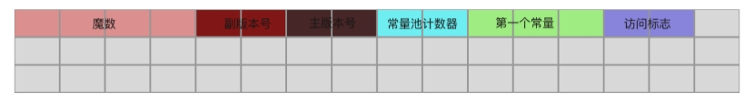
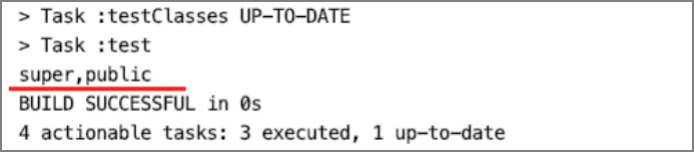

解析class文件的访问标志

Class文件结构中的访问标志项access_flags是用U2类型存储的，也就是2个字节。用某个bit位的值是否为1判断该类或接口的访问权限、属性。
| 标志名 | 值 | 描述 |
|---|---|---|
| ACC_PUBLIC | 0x0001 | 声明为public |
| ACC_FINAL | 0x0010 | 声明为final，不允许继承 |
| ACC_SUPER | 0x0020 | Jdk1.0.2之后编译的class文件都会有此值 |
| ACC_INTERFACE | 0x0200 | 声明该class是接口 |
| ACC_ABSTRACT | 0x0400 | 声明为抽象类 |
| ACC_SYNTHETIC | 0x1000 | 表示该class文件并非由java代码编译生成 |
| ACC_ANNOTATION | 0x2000 | 标志这是一个注解类型 |
| ACC_ENUM | 0x4000 | 标志这是一个枚举类型 |
如何判断一个类设置了上表中的哪些标志呢？
首先从Class文件字节缓存中读取到access_flags的值，再将access_flags转为int类型，将转换后的值“算术与（&）”上各个标志的值，判断结果是否等于这个标志的值，实现代码如下。
public class ClassAccessFlagUtils {
private static final Map<Integer, String> classAccessFlagMap = new HashMap<>();
static {
// 公有类型
classAccessFlagMap.put(0x0001, "public");
// 不允许有子类
classAccessFlagMap.put(0x0010, "final");
classAccessFlagMap.put(0x0020, "super");
// 接口
classAccessFlagMap.put(0x0200, "interface");
// 抽象类
classAccessFlagMap.put(0x0400, "abstract");
// 该class非java代码编译后生成
classAccessFlagMap.put(0x1000, "synthetic");
// 注解类型
classAccessFlagMap.put(0x2000, "annotation");
// 枚举类型
classAccessFlagMap.put(0x4000, "enum");
}
/**
* 获取16进制对应的访问标志字符串表示 （仅用于类的访问标志）
*
* @param flag 访问标志
* @return
*/
public static String toClassAccessFlagsString(U2 flag) {
final int flagVlaue = flag.toInt();
StringBuilder flagBuild = new StringBuilder();
classAccessFlagMap.keySet()
.forEach(key -> {
if ((flagVlaue & key) == key) {
flagBuild.append(classAccessFlagMap.get(key)).append(",");
}
});
return flagBuild.length() > 0 && flagBuild.charAt(flagBuild.length() - 1) == ',' ?
flagBuild.substring(0, flagBuild.length() - 1) : flagBuild.toString();
}
}
在class文件中紧挨着常量池存储的就是access_flags，如下图所示。

现在我们来实现class文件访问标志解析器AccessFlagsHandler，并将AccessFlagsHandler解析器交给ClassFileAnalysiser管理。AccessFlagsHandler的排序值设置为3，即放在常量池解析器之后，约定在常量池解析器解析完成之后再到访问标志解析器解析。AccessFlagsHandler的实现代码如下。
public class AccessFlagsHandler implements BaseByteCodeHandler {
@Override
public int order() {
return 3;
}
@Override
public void read(ByteBuffer codeBuf, ClassFile classFile) throws Exception {
classFile.setAccess_flags(new U2(codeBuf.get(), codeBuf.get()));
}
}
最后编写单元测试，验证class文件访问标志解析器是否能正常完成解析。在单元测试中，调用ClassAccessFlagUtils 工具类的toClassAccessFlagsString方法将访问标志输出为字符串。
public class AccessFlagsHandlerTest {
@Test
public void testAccessFlagsHandlerHandler() throws Exception {
ByteBuffer codeBuf = ClassFileAnalysisMain.readFile("RecursionAlgorithmMain.class");
ClassFile classFile = ClassFileAnalysiser.analysis(codeBuf);
// 获取访问标志
U2 accessFlags = classFile.getAccess_flags();
// 输出为字符串
System.out.println(ClassAccessFlagUtils.toClassAccessFlagsString(accessFlags));
}
}
单元测试结果如下图所示。

发布于：2021 年 07 月 24 日
作者: 吴就业
链接: https://wujiuye.gitbook.io/jvmbytecode
来源: GitBook开源电子书《深入浅出JVM字节码》（《Java虚拟机字节码从入门到实战》的第二版），未经作者许可，禁止转载!